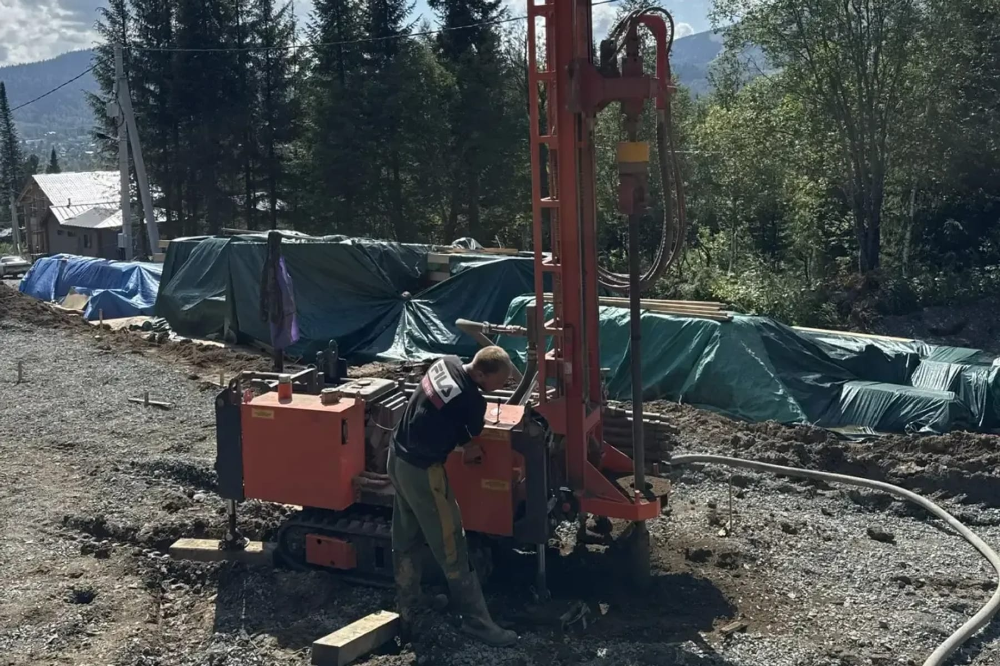

УРБ-2Д3 на КамАЗе: что установка может и чего нет
Разбираем паспортные данные УРБ-2Д3 по комплектациям: глубина зависит от вращателя и способа проходки, а не от одной цифры в рекламе. И объясняем, почему шасси решает не меньше, чем сама установка.
«УРБ-2Д3 бурит до 300 метров» — фраза, которая кочует по объявлениям буровых компаний почти без изменений. Проблема не в том, что цифра выдумана: 300 метров действительно встречаются в паспортных данных установки. Проблема в том, что «УРБ-2Д3» — это не одна конкретная машина с одними характеристиками, а серия установок, где глубина зависит от комплектации вращателя и от способа проходки, а не берётся из названия модели. Разбираем, что установка этого класса реально может, по данным производителей.

Способы проходки, которые поддерживает установка
Установки серии УРБ-2Д3 проектируются многофункциональными — способными работать несколькими способами проходки на одной базе, а не только одним. В набор входят шнековое бурение (проходка вращающимся винтом без промывочной жидкости), роторное бурение с промывкой или продувкой сжатым воздухом (вращение долота с одновременным выносом шлама потоком) и пневмоударный способ (разрушение породы ударным механизмом, работающим на сжатом воздухе, в сочетании с вращением). Чем принципиально отличаются роторный и ударно-канатный подходы к разрушению породы и какой метод для каких пород эффективнее, подробно разобрано в статье роторное и ударно-канатное бурение — здесь важно другое: сама установка не привязана к одному способу и позволяет переходить между ними по ходу проходки одного и того же ствола, если этого требует разрез.
Как глубина зависит от вращателя и способа
Вот здесь и начинается расхождение с рекламной цифрой «до 300 метров» как безусловной характеристикой. По данным завода-изготовителя — Объединённых заводов буровой техники имени В. В. Воровского — глубина проходки УРБ-2Д3 прямо зависит от исполнения вращателя:
- комплектация «Стандарт» (вращатель 2Д1) — 30 м шнеками, 200 м с продувкой и с промывкой, 30 м пневмоударником;
- комплектация «Универсал» — 30/50/300/300/40 м по тем же способам с добавлением промежуточного диаметра;
- комплектация «Профи» (вращатель 2Д3) — 30/50/300/300/50 м.
То есть 300 метров — характеристика не установки «УРБ-2Д3» вообще, а конкретно исполнений «Универсал» и «Профи» при бурении с промывкой или продувкой; у базовой комплектации «Стандарт» тот же способ даёт максимум 200 метров.
Другой производитель — Уральский завод спецтехники — для варианта на шасси КАМАЗ-43118 приводит собственный набор цифр: 50 м шнеками, 300 м с промывкой, 150 м пневмоударным способом. Обратите внимание на расхождение по пневмоударнику — 150 м у УЗСТ против существенно меньших значений у комплектаций ОЗБТ им. Воровского: это разные исполнения одной серии, а не ошибка одного из производителей. Единой цифры «глубина УРБ-2Д3» физически не существует — есть таблица «комплектация × способ», и годится для оценки только весь набор целиком, а не выхваченное из него одно число.
Начальный и конечный диаметр
Диаметр ствола, как и глубина, меняется в зависимости от способа проходки, а не задаётся одной цифрой. По данным Уральского завода спецтехники, для варианта на КАМАЗ-43118 диапазон следующий: шнеками — 62–600 мм, с промывкой — 93–490 мм, пневмоударным способом — 110–350 мм. На практике это означает, что ствол обычно проходит телескопически — большим диаметром сверху, где встречаются рыхлые и неустойчивые породы, требующие немедленного крепления обсадной трубой, и меньшим диаметром ниже, во вскрытом более устойчивом горизонте. Какой конкретно диаметр обсадной колонны нужен под погружной насос конкретной скважины и как это связано с материалом трубы, разобрано в статье обсадная труба для скважины.
Роль шасси и проходимость
Установка смонтирована на шасси, и в характеристиках буровой техники это не второстепенная деталь. Производители предлагают УРБ-2Д3 на разных базах — УРАЛ-4320, УРАЛ-NEXT, ТЛМ-5АМ, МТЛБУ, КАМАЗ-43118 среди них, — и выбор шасси определяет, куда установка вообще способна доехать и встать на рабочую точку. Грузоподъёмность мачты варианта на КАМАЗ-43118, по данным Уральского завода спецтехники, — 10 000 кг: это вес, который конструкция мачты и подъёмный механизм должны безопасно удерживать при спуско-подъёмных операциях с трубами, и именно эта цифра, а не абстрактная «мощность машины», определяет, с какой колонной труб установка способна работать без риска для оборудования и бригады.
Шасси-вездеход с равномерно распределённой массой и полным приводом проходит там, где обычный грузовик застрянет, — раскисший грунт после дождя, лёгкий уклон, неукреплённый съезд с дороги. Но и у вездехода есть предел: габариты и масса тяжёлой установки требуют определённого пространства для разворота и постановки на точку, а на сильно пересечённом рельефе сама проходимость шасси — только часть задачи; как решается вопрос подъезда и устойчивости установки на участке с уклоном, разобрано отдельно в статье бурение на участке с уклоном.
Для совсем тяжёлых условий бездорожья в модельном ряду серии предусмотрено и гусеничное шасси — МТЛБУ, наряду с колёсными УРАЛ-4320, УРАЛ-NEXT, ТЛМ-5АМ и КАМАЗ-43118. Это не то решение, что стоит у каждого подрядчика, — гусеничная база тяжелее в обслуживании и медленнее на дороге между объектами, — но сам факт, что производитель предусмотрел такой вариант, показывает: для установки этого класса вопрос «доедет ли машина» и вопрос «пробурит ли машина» — два разных инженерных вопроса, и решают их разным шасси под одной и той же буровой частью.
Где нужна малогабаритная установка вместо тяжёлой
У проходимости тяжёлого шасси-вездехода есть обратная сторона — габариты самой машины. Установка такого класса не пройдёт в узкие ворота, не развернётся в тесном застроенном дворе и может повредить благоустройство участка просто своими габаритами, даже если формально способна физически заехать. Для таких случаев в парке техники предусмотрена малогабаритная установка — вариант с заездом от 1,5 м, способный работать внутри застройки без повреждения участка, но рассчитанный на бытовые горизонты, а не на весь диапазон глубин, доступный тяжёлой машине.
Выбор между тяжёлой установкой класса УРБ-2Д3 и малогабаритной — это не вопрос «какая лучше», а вопрос конкретного участка: подъезда, планировки двора, расстояния от техники до соседних построек. Тяжёлая установка эффективнее там, где нужна глубина и сложная порода, а малогабаритная — там, где физически важнее не задеть забор соседа, чем добраться до максимально возможной глубины.

Что из этого стоит проверять при заказе
Из всего разбора выше следует практический вывод: вопрос «какой глубины бурит ваша установка» сам по себе неполный без уточнения — какой конкретно комплектации вращатель стоит на машине подрядчика и каким способом планируется проходка. Собственная установка компании работает роторным способом на шасси КАМАЗ — вездеходе; точную комплектацию вращателя и достижимую глубину для конкретного участка и породы правильнее уточнять при выезде инженера, а не по паспортной цифре из рекламы одного из производителей серии — она может относиться к другому исполнению, чем то, что реально стоит на площадке. Все шесть этапов, из которых складывается сама проходка — от выезда инженера до паспорта скважины, — разобраны отдельно в статье как проходит бурение скважины. Уточнить возможности техники применительно к конкретному участку можно при заказе бурения скважины на воду.